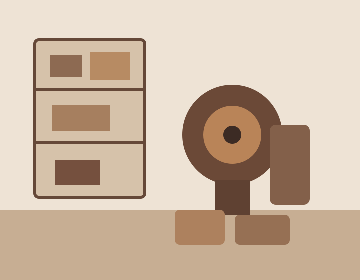

Medium Roast
Front Porch
Balanced and easygoing with notes of milk chocolate, toasted almond, and brown sugar.
12 oz · Whole Bean
Find it at the shopSmall-batch roasted in the Texas Hill Country
< Hill & Hollow Coffee roasts approachable, everyday coffee for people who want something better than grocery-store beans without needing a tasting-wheel vocabulary.

Roast Lineup
Medium Roast
Balanced and easygoing with notes of milk chocolate, toasted almond, and brown sugar.
12 oz · Whole Bean
Find it at the shopLight Roast
Bright but approachable with citrus, honey, and a clean finish.
12 oz · Whole Bean
Find it at the shopDark Roast
Deep and smooth with cocoa, caramelized sugar, and a little smoke.
12 oz · Whole Bean
Find it at the shop
Our Story
Hill & Hollow started with a simple idea: specialty coffee can be excellent without being intimidating.
We roast in small batches, keep the lineup focused, and explain coffee in language that sounds like something a human being might actually say.
Why Hill & Hollow?
Roasted in small batches and dated clearly.
A focused lineup instead of 47 nearly identical bags.
Roasted and packed in the Texas Hill Country.
Visit the Roastery
Stop by for fresh beans, simple brewing advice, and whatever is coming out of the roaster that day.
Hill & Hollow Coffee
214 Market Road
Boerne, TX 78006
Tuesday–Saturday · 8 a.m.–4 p.m.